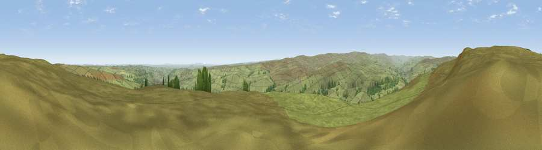

Viewpoint near Frosterley
#7904 in England · top 10% of its area beats it · near FrosterleyWhere it is
The exact computed spot (NZ 02425 38875). Click the marker for map links.
The view, rendered

A 360° render of this exact spot computed from the terrain model, tree cover and land cover — summer colours, afternoon light, calibrated against photographs of famous viewpoints. Real trees, hedges and buildings will differ in detail.
The panorama
Grey silhouette: terrain skyline in each direction (720 bearings, Earth curvature and refraction included). Dashed green: skyline with trees (+15 m) and buildings (+8 m) as obstacles. Blue strip: how far the ground is visible on each bearing.
Where the view opens
Wedge length = distance to the farthest visible ground on that bearing (vegetation-aware). Rings at 10, 25 and 50 km.
What fills the view
94% grassland · 5% woodland · 1% cropland
Angular shares of the visible panorama (visual magnitude), not map area. Landscape diversity 0.12 (0–1 Shannon).
Key numbers
More beautiful places nearby
The staircase of upgrades: each row has a higher view potential than everything closer. Driving times are estimates from straight-line distance, calibrated against real road routing — check an actual route before setting out.
| Place | Direction | Drive | Score |
|---|---|---|---|
| Viewpoint near Frosterley | NW · 0 km | ~1 min | 68.3 |
| Collier Law | NNW · 3 km | ~7 min | 71.7 |
| Viewpoint near Eggleston | S · 15 km | ~26 min | 76.0 |
| Pontop Pike | NE · 19 km | ~32 min | 77.8 |
| Little Dun Fell | W · 32 km | ~50 min | 78.4 |
| Cross Fell | W · 34 km | ~52 min | 78.7 |
| Viewpoint near Cumrew | WNW · 48 km | ~69 min | 78.8 |
| Calders | SW · 55 km | ~77 min | 79.0 |
54.74483, -1.96385 · source: screening · position refined by local search. Computed location — check access rights before visiting.